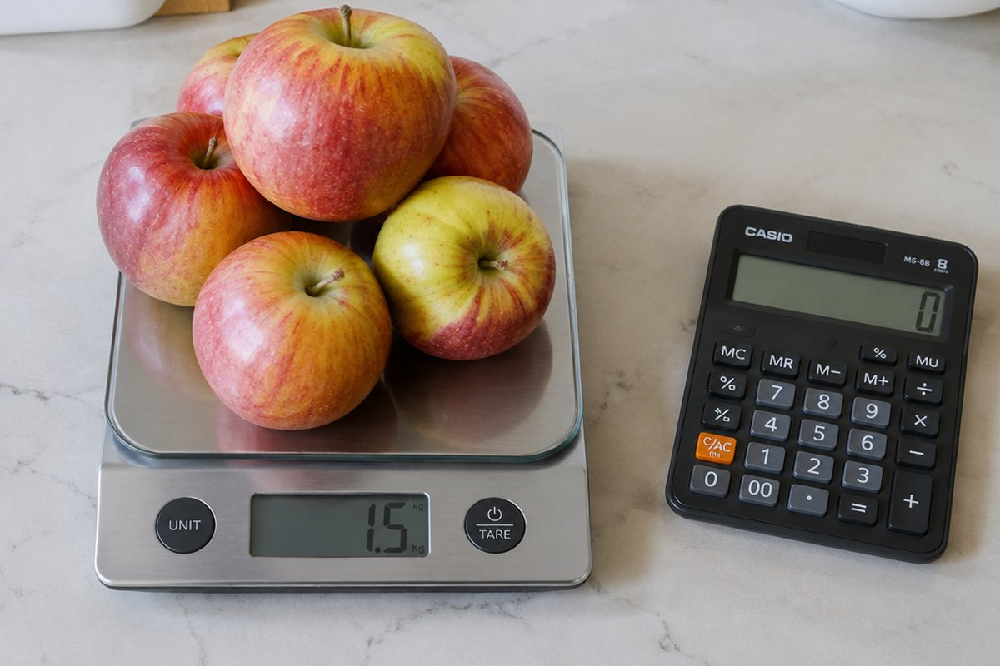

소수끼리 곱하면 소수점은 어디로 갈까?

주스 한 컵이 0.3L인데 4컵을 마시면 모두 몇 L일까요? 소수의 곱셈은 자연수의 곱셈과 소수점 위치만 알면 쉽게 풀 수 있어요.
(소수) × (자연수)
0.3 × 4는 0.3을 4번 더한 것과 같아요. 0.3 + 0.3 + 0.3 + 0.3 = 1.2예요.
0.3은 0.1이 3개이므로 0.3 × 4는 0.1이 12개, 즉 1.2라고 생각할 수도 있어요. 1.25 × 3도 자연수처럼 125 × 3 = 375를 구한 뒤 소수 두 자리로 맞추면 3.75예요.
0.3 × 4 = 1.2, 1.25 × 3 = 3.75
(자연수) × (소수)
6 × 0.7은 6의 0.7배라는 뜻이에요. 1보다 작은 수를 곱하면 곱은 처음 수보다 작아져요.
6 × 7 = 42를 구하고, 곱하는 소수가 소수 한 자리이므로 곱도 소수 한 자리로 나타내면 4.2예요.
6 × 0.7 = 4.2 (6보다 작아져요)
이렇게 풀어요: (소수) × (소수)
1.5 × 2.3을 풀어 볼까요? ① 소수점을 없애고 자연수처럼 15 × 23 = 345를 구해요.
② 곱하는 두 수의 소수점 아래 자리 수를 더해요. 1.5는 한 자리, 2.3도 한 자리라서 1 + 1 = 2자리예요. ③ 345에서 소수 두 자리를 만들면 3.45예요. 0.4 × 0.6도 4 × 6 = 24에서 소수 두 자리를 만들어 0.24예요.
1.5 × 2.3 = 3.45, 0.4 × 0.6 = 0.24
곱의 소수점 위치 규칙
소수에 10, 100, 1000을 곱하면 곱하는 수의 0의 개수만큼 소수점이 오른쪽으로 옮겨 가요. 3.25 × 10 = 32.5, 3.25 × 100 = 325예요.
반대로 0.1, 0.01을 곱하면 소수점 아래 자리 수만큼 소수점이 왼쪽으로 옮겨 가요. 3.25 × 0.1 = 0.325예요.
3.25 × 10 = 32.5, 3.25 × 100 = 325, 3.25 × 1000 = 3250, 3.25 × 0.1 = 0.325
핵심 낱말
- 소수
- 0.1, 2.35처럼 소수점을 사용해 나타낸 수
- 소수점
- 자연수 부분과 소수 부분 사이에 찍는 점
- 소수 한 자리 수
- 소수점 아래 숫자가 하나인 소수(예: 0.7)
- 곱
- 곱셈을 해서 나온 값
한 줄 정리
- 소수의 곱셈은 자연수처럼 곱한 뒤 소수점을 찍어요.
- 곱의 소수점 아래 자리 수는 곱하는 두 수의 소수점 아래 자리 수의 합이에요.
- 10, 100, 1000을 곱하면 소수점이 0의 개수만큼 오른쪽으로 옮겨 가요.
학교 교육과정 연결
- [6수01-13] 소수의 곱셈의 계산 원리를 탐구하고 그 계산을 할 수 있다.